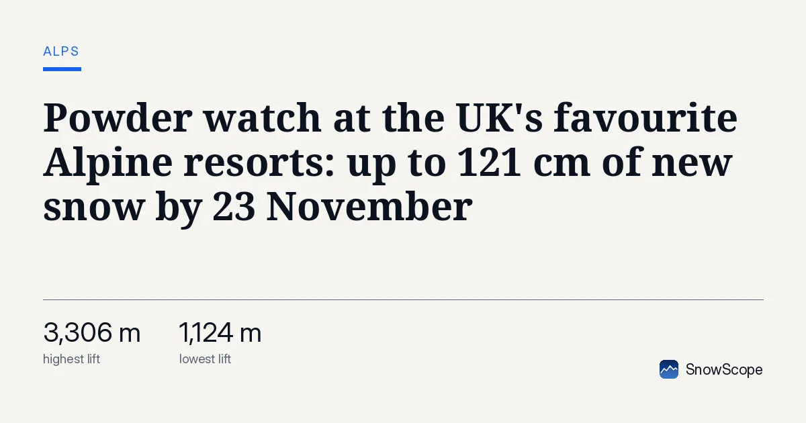
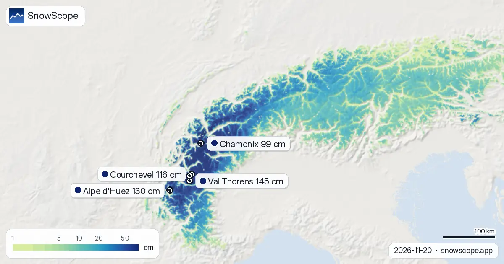

Powder watch at the UK's favourite Alpine resorts: up to 121 cm of new snow by 23 November
12 of the 12 resorts we follow at the UK's favourite Alpine resorts have snow on their upper slopes on Friday 20 November; Les Arcs leads with 166 cm.
See the live snow forecast for Alpe d'Huez in the SnowScope appSnow depth, powder alerts and the 3D map, free.
The next three days
Coming up by 23 November: Alpe d'Huez 121 cm, Val Thorens 92 cm and Courchevel 86 cm.
| Resort | Snow depth | New snow, 72 h | Coming, next days | Top |
|---|---|---|---|---|
| Alpe d'Huez | 130 cm | 111 cm | 121 cm | 3,306 m |
| Val Thorens | 145 cm | 143 cm | 92 cm | 3,221 m |
| Courchevel | 116 cm | 125 cm | 86 cm | 2,695 m |
| Méribel | 116 cm | 125 cm | 86 cm | 2,920 m |
| Chamonix | 99 cm | 133 cm | 79 cm | 2,486 m |
| Les Arcs | 166 cm | 134 cm | 77 cm | 3,205 m |

Fresh snow, last 72 hours
Most new snow in 72 hours: Val Thorens 143 cm, Les Arcs 134 cm and Chamonix 133 cm.
The top three in detail
Alpe d'Huez reports 130 cm up top; the lifts reach 3,306 m. Fresh snow: 111 cm in three days, forecast 121 cm by 23 November.
Val Thorens reports 145 cm up top; the lifts reach 3,221 m. Fresh snow: 143 cm in three days, forecast 92 cm by 23 November.
Courchevel: 116 cm on the upper slopes (top lift 2,695 m), 125 cm new in 72 hours, 86 cm more by 23 November.
Méribel: 116 cm on the upper slopes (top lift 2,920 m), 125 cm new in 72 hours, 86 cm more by 23 November.
Snow depth, resort by resort
Across all 12 resorts on this list, the middle value is 116 cm on the upper slopes.
Behind the leader: Val Thorens (145 cm), La Plagne (144 cm), Alpe d'Huez (130 cm) and Courchevel (116 cm).
If you have two days
Best value for two days on skis: Alpe d'Huez, with 130 cm now and 121 cm more expected by 23 November.
Check the transfer time from Geneva, Lyon or Salzburg before booking: a short transfer gives you an extra half day on the slopes.
Beyond the groomers
Powder is possible on the upper slopes after 143 cm of new snow. Tours and off-piste only with the avalanche bulletin read, a transceiver, shovel and probe.
A fresh layer like this makes the difference between scraped pistes and soft, grippy snow, especially on the steeper runs.
Tips for skiers
- Start early: the first hours give the best snow after a cold night.
- Winter tyres or chains for the last kilometres to the higher resorts.
- Off-piste only after reading the avalanche bulletin.
About these numbers
Resort snow depths are the deepest snow on the resort's upper slopes from the SnowScope snow model (about 1 km, run of 20 November); they are estimates for an area, not a measurement at one point. Station values are measurements on the date shown. Forecasts can change. Always read the official avalanche bulletin before going off-piste.
Cite this report
For research, teaching or the press: the numbers and charts are free to reuse under CC BY 4.0 with this citation.
SnowScope (2026), Powder watch at the UK's favourite Alpine resorts: up to 121 cm of new snow by 23 November, https://snowscope.app/blog/en/2026/11/fresh-snow-next-days-alps-uk-20-november-2026.html, accessed 2026-11-20
SnowScope (Atlas Labs). (2026, November 20). Powder watch at the UK's favourite Alpine resorts: up to 121 cm of new snow by 23 November. SnowScope snow reports. https://snowscope.app/blog/en/2026/11/fresh-snow-next-days-alps-uk-20-november-2026.html
BibTeX
@misc{snowscope2026freshsnownextdaysalpsuk2,
author = {{SnowScope (Atlas Labs)}},
title = {Powder watch at the UK's favourite Alpine resorts: up to 121 cm of new snow by 23 November},
year = {2026},
month = nov,
howpublished = {\url{https://snowscope.app/blog/en/2026/11/fresh-snow-next-days-alps-uk-20-november-2026.html}},
note = {Published 2026-11-21 11:56 UTC; accessed 2026-11-20}
}· CC BY 4.0 · Methods, data and tools →
Alpe d'Huez: snow and temperature by height, this winter vs last (tools) →
Follow Alpe d'Huez
Free: a message when fresh snow is coming, and the forecast every morning.
More snow reports

Alpe d'Huez faces the sun. How to plan a day by the clock and by height, with the snow of 46 past winters from the low villages to Pic Blanc.

Three ways to spend a day from Méribel: east to Courchevel, south towards Val Thorens, or at home on Mont Vallon, with the snow of 46 past winters at three heights.

Is Verbier good for beginners? When is the snow best? How do you get there? Answers from the 4 Vallées and 46 past winters of snow data.